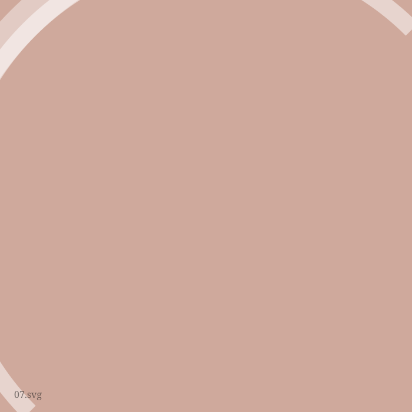

Two ways of working, one address.
Studio Subasio is a placeholder name for a shared studio below the basilica in Assisi, where Nome Uno and Nome Due have worked side by side for over a decade. One trained in painting, the other in graphic design and photography; both borrow the local limestone as a working palette.

Painter — mosaics — silhouettesNome Uno
Nome Uno studied painting in Perugia before returning to Umbria to work in oil, tempera and tessera. Recent work looks at the human figure reduced to silhouette against large sheets of photographic paper.
 Graphic design — photography
Graphic design — photography
Nome Due
Nome Due runs the studio's design practice — posters, identities and printed matter for local institutions — alongside an ongoing black-and-white photographic study of the Assisi countryside.
This page uses placeholder names, bios and a placeholder studio name (Studio Subasio) so the real copy can be dropped in later without touching the layout.